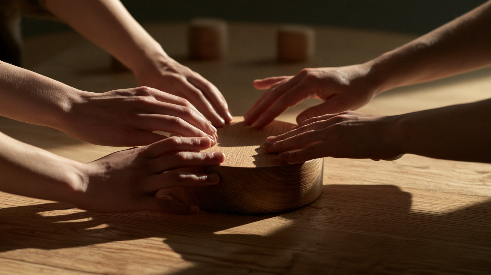

Syntax
What if you could think with a computer the way you build with your hands?
The thought
Computation usually asks us to translate relationships into symbols: words, diagrams, menus, files and commands.
But humans can express relationships physically.
Place these together.
Move this away.
Build a path between them.
Give this to her.
Hold this with me.
Leave this here.
The arrangement can be the information.
Place
A place can have meaning.
Putting an object somewhere turns intention into state. Near, far, inside, outside, above, below, between and apart are relationships our hands already understand.
Exchange
Who performs an action can be part of its meaning.
Handing someone an object is different from placing it yourself. Taking it implies participation. Returning it can imply refusal or completion. Passing it onward can transfer responsibility.
Agree
Then something unexpected appeared: several people touching the same object at the same time.
Two hands can exchange.
Many hands can agree.
Shared touch can make participation visible. Everyone experiences everyone else's presence in the action at the same moment.

A house closing is one useful example: several parties, a consequential agreement, a shared moment of commitment. But the interaction can remain open to interpretation—agreement, authorization, beginning, ending, transfer, promise, decision.
Build
The objects don't need fixed meanings. A sphere can become the customer because you said it was. A ring can become a boundary because you placed something inside it. Meaning can emerge from speech, action, context and the evolving arrangement.
That makes the surface less like a control panel and more like a shared reasoning space.
Build it.
What if we could show it?
History
An object can also acquire meaning through what happens to it.
A movable object can say still deciding. A balanced object can say conditional. An exchanged object can carry responsibility. Shared touch can establish participation.
And for consequential actions, the object itself could change irreversibly: join, harden, wear, darken, break, seal or become fixed.
Let the object become what happened.
The physical state becomes part of the history.
The question
Syntax isn't a proposed code for wooden objects.
It's an exploration of whether people and intelligent systems could reason together through objects, relationships, placement and exchange—without requiring every thought to become a command first.